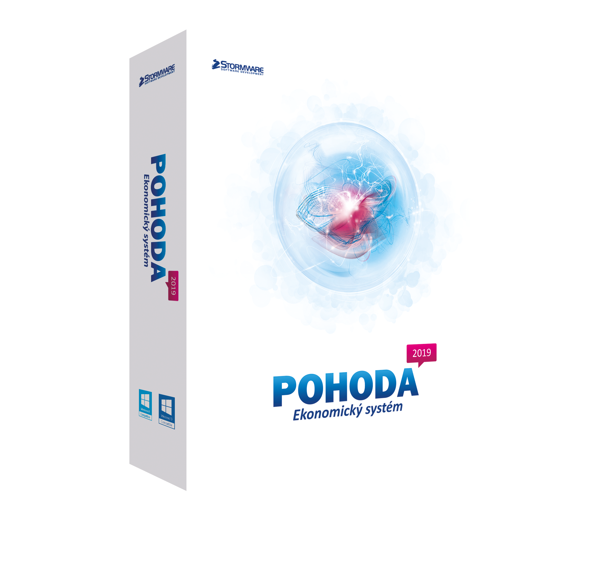
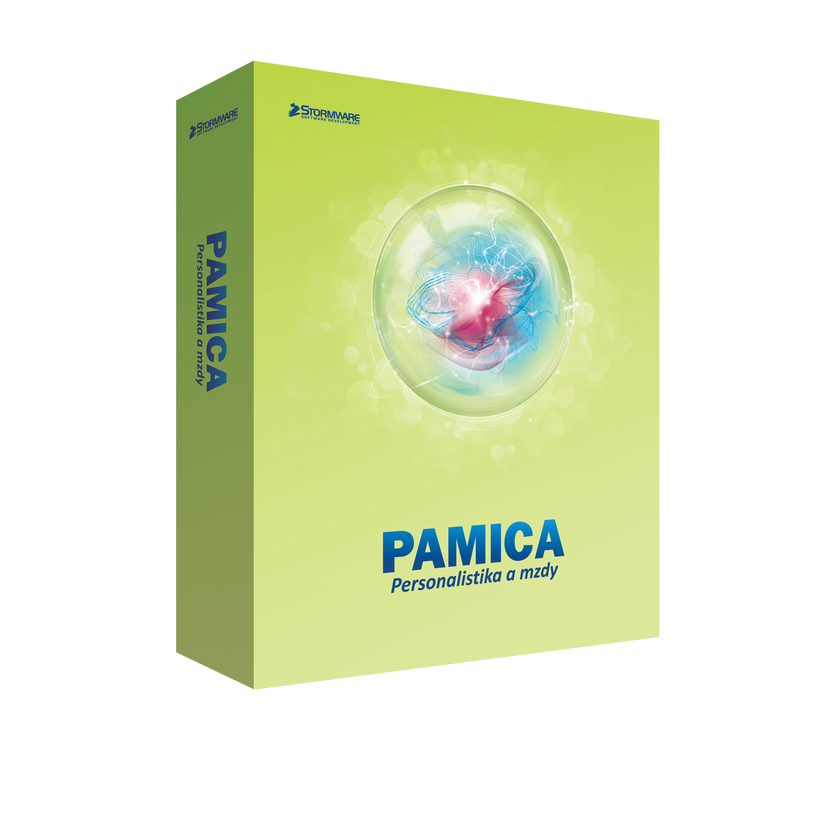

Účetnictví
vedení podvojného účetnictví
Zpracování podvojného účetnictví pro právnické osoby nebo fyzické osoby vedoucí účetnictví povinně či dobrovolně. Zastupování na příslušných úřadech. Zpracování výkazů pro klienty.
Brno a okolí
Podvojné účetnictví, mzdy a daňová evidence vedené přehledně, srozumitelně a bez zbytečného chaosu.
Daňová evidence a přiznání bez zbytečné administrativy.
Kompletní účetnictví, výkazy i komunikace s úřady.
Zpracování mezd, exekucí i pracovních agend od A do Z.
Služby
Služby
Moderní účetní servis postavený na rychlé orientaci v číslech, čisté komunikaci a důrazu na to, aby všechno dávalo smysl i vám, nejen systému.
Zpracování podvojného účetnictví pro právnické osoby nebo fyzické osoby vedoucí účetnictví povinně či dobrovolně. Zastupování na příslušných úřadech. Zpracování výkazů pro klienty.
Komplexní zpracování mzdové agendy včetně zastupování na příslušných úřadech. Evidence exekucí a insolvence. Poskytování součinnosti pro exekutory a insolvenční správce.
Zpracování daňové evidence pro fyzické osoby vedoucí peněžní deník nebo paušální výdaje.
Zpracování daňového přiznání k dani z příjmu právnických a fyzických osob, k silniční dani i k dani z nemovitých věcí.
O mně
V současné době podnikám v oblasti účetních poradců, vedení účetnictví, vedení daňové evidence a zpracování mezd. Při práci využívám účetní software POHODA a pro personalistiku a mzdy software PAMICA.
V roce 2018 jsem začínal na pozici junior účetní ve středně velké společnosti, kde jsem zpracovával vydané a přijaté faktury, evidoval majetek a spravoval skladové karty. V roce 2019 jsem přešel do účetní společnosti poskytující ekonomické služby pro holding Vendeavour Service, kde jsem působil jako samostatný účetní.
Absolvoval jsem kurzy Roční zúčtování mezd, Zdaňování příjmů ze závislé činnosti a Legislativní aktuality ve vzdělávací agentuře INTEGRA CENTRUM, s.r.o. a jsem držitelem příslušných certifikátů.
Účetnictví vnímám jako nástroj, který má klientovi dávat přehled, jistotu a oporu pro rozhodování. Dbám na správnost, úplnost, průkaznost a srozumitelnost s ohledem na reálné potřeby konkrétního podnikání.
Poptávka
Nástroje
Pro klienty to znamená stabilní procesy, přehledné výstupy a zázemí v nástrojích, které jsou v oboru ověřené.

POHODA umožňuje vést účetnictví i daňovou evidenci a vyhoví plátcům i neplátcům DPH. Systém je vhodný pro živnostníky, podnikatele i společnosti zabývající se obchodem nebo službami, stejně jako pro svobodná povolání a neziskové organizace.

PAMICA je profesionální nástroj pro vedení personální agendy, pracovních poměrů a zpracování mezd zaměstnanců. Umožňuje kvalitní správu dat i napojení na další systémy včetně exportů do programu POHODA.
Vyplňte své kontaktní údaje a v nejbližší době se Vám ozvu. Zjistíme, jestli bychom spolu mohli spolupracovat.